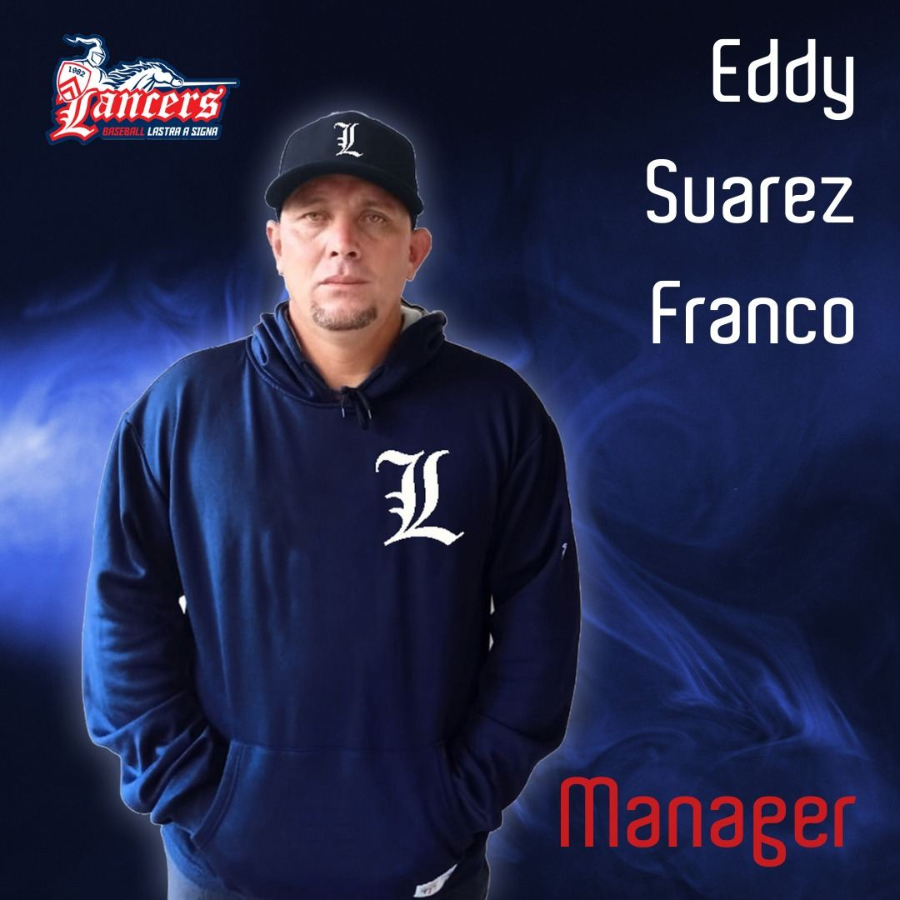
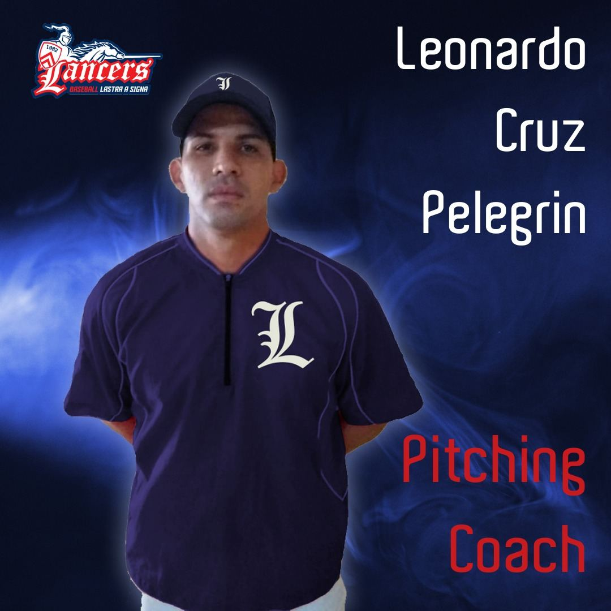

Il Lancers Club ha il piacere di ufficializzare l’arrivo di due tecnici cubani per la prossima stagione, Eddy Suarez e Leonardo Cruz guideranno la prima squadra di Lastra a Signa.
Questa scelta arriva in un momento storico per il nostro Club in cui si è reso necessario ricostruire e rifondare; un’esaltante crescita ed ottimi risultati degli ultimi anni ma anche la recente retrocessione dalla Serie A e l’allontanamento di alcuni tecnici e giocatori.
Suarez, classe 1977, sarà il manager del team lastrigiano; vanta ben 8 stagioni da giocatore nella Serie Nazionale Cubana, tutte con la città di Holguin, con una media battuta di .244.
Catcher esperto ed apprezzato ha contribuito alla conquista del titolo nella stagione 2002.
Ha studiato Scienze della Cultura Fisica e Sportiva conseguendo la laurea, specializzandosi come allenatore di baseball.
Inizia ad allenare nelle categorie provinciali proprio nell’anno del titolo nazionale per arrivare fino alla massima categoria cubana dove resterà per ben 6 stagione svolgendo varie mansioni all’interno dello staff tecnico della squadra Holguin.

Il giovane pitching coach Cruz invece si occuperà di seguire il parco lanciatori; come atleta ha vinto 7 campionati provinciali risultando il miglior lanciatore in tre occasioni.
Ha lanciato per due stagioni nella squadra under23 di Holguin ed è arrivato alla Serie Nazionale come lanciatore di riserva; ha inoltre partecipato alla selezione per vestire la maglia della nazionale cubana per la categoria under18.
Come Eddy, anche Leonardo, ha conseguito il titolo in Scienze della Cultura Fisica e Sportiva conseguendo la laurea, specializzandosi in studi specifici relativi al baseball.
Allena da alcuni anni le squadre giovanili della provincia con ottimi risultati, questo percorso sarà fondamentale per interfacciarsi con i giovani atleti lastrigiani.
L’arrivo dei due tecnici è il primo tassello per ripartire, uno sforzo importante voluto fortemente dalla dirigenza per dare supporto a tutte le categorie del Club che quest’anno scenderanno in campo; infatti i due tecnici saranno a disposizione degli altri staff come supporto durante gli allenamenti e, compatibilmente con gli impegni della prima squadra, anche in campo durante le patite.
Le solide basi strutturali ed economiche costruite con fatica ed impegni negli ultimi anni ci garantiscono stabilità e soprattutto un buon numero di atleti che difenderanno i nostri colori, atleti del posto cresciuti con addosso la casacca dei lancieri.
Nonostante le difficoltà ci siamo, abbiamo fame di fare bene e per questo molto presto arriveranno altre importanti novità.